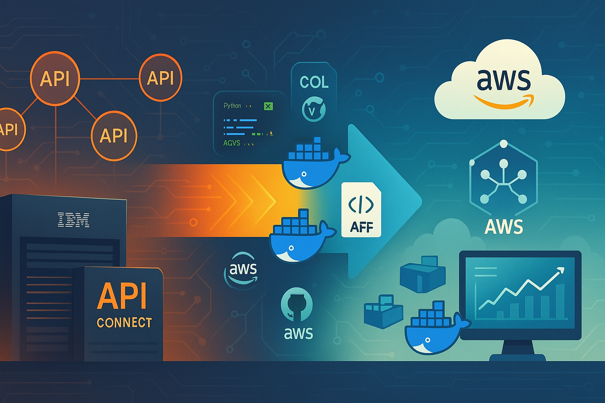

A Revolução Silenciosa: Como uma Empresa Transformou sua Arquitetura de APIs em 90 Dias

Uma história real de inovação tecnológica e superação de desafios
Tempo de leitura: 10 minutos
Prólogo: O Dilema do CEO
Era uma manhã de terça-feira quando Maria Santos, CEO da TechFlow Solutions, uma empresa de serviços financeiros com mais de 500.000 clientes, recebeu uma ligação que mudaria tudo. Do outro lado da linha, seu CTO, Roberto Silva, trazia notícias que fariam qualquer executivo perder o sono.
"Maria, precisamos conversar. Nosso sistema de APIs está custando 40% mais do que deveria, e nosso fornecedor principal anunciou descontinuação da plataforma em 18 meses."
Essa conversa marcaria o início de uma jornada épica de transformação tecnológica que provaria que, às vezes, as maiores crises geram as melhores oportunidades de inovação.
Capítulo 1: O Gigante Adormecido
A Herança do Passado
A TechFlow Solutions havia crescido rapidamente nos últimos anos. Como muitas empresas em expansão, suas decisões tecnológicas foram moldadas pela urgência do mercado. Em 2020, quando a digitalização se tornou questão de sobrevivência, a empresa investiu pesadamente no IBM API Connect, uma plataforma robusta que prometia resolver todos os desafios de integração.
Por três anos, a solução funcionou bem. 47 APIs conectavam sistemas críticos, desde consultas de CEP até integrações complexas com Salesforce. Clientes acessavam seus dados através de aplicativos mobile elegantes, e tudo parecia funcionar perfeitamente.
Mas por baixo da superfície, uma tempestade se formava.
Os Números que Não Mentiam
Roberto apresentou à Maria uma análise financeira que revelava a dura realidade:
- Custos operacionais: R$ 480.000/ano apenas em licenciamento
- Equipe especializada: 6 desenvolvedores dedicados exclusivamente ao APIC
- Tempo de deployment: 3-4 semanas para mudanças simples
- Dependência crítica: 100% vendor lock-in com uma única empresa
"É como se estivéssemos alugando um Ferrari para fazer entregas na cidade", explicou Roberto. "Funciona, mas há maneiras mais inteligentes de resolver o problema."
A Revelação AWS
A proposta era audaciosa: migrar toda a infraestrutura de APIs para AWS API Gateway. Os números projetados eram impressionantes:
- Redução de custos: 65% menor que a solução atual
- Elasticidade: Pagar apenas pelo que usar
- Controle total: Sem dependência de fornecedor único
- Inovação: Acesso a todo o ecosystem AWS
Mas Maria fez a pergunta que todo CEO faria: "Qual é o risco? E quanto tempo levaríamos para ver resultados?"
Capítulo 2: A Estratégia do Primeiro Passo
O Plano Inteligente
A equipe de Roberto sabia que migrar 47 APIs de uma vez seria como tentar mover uma montanha com uma colher. A estratégia precisava ser diferente: pequenos passos, grandes resultados.
O plano era elegante em sua simplicidade:
- Sprint de Prova de Conceito: Começar com 10 APIs representativas
- Validação Técnica: Provar que a migração era viável
- Ambiente Local: Desenvolver sem custos AWS usando simulação
- Automação Completa: Scripts para replicar em produção
- Documentação Profissional: Padrões corporativos para stakeholders
A Escolha das Tecnologias
Roberto e sua equipe fizeram escolhas que pareciam contra-intuitivas, mas se provariam geniais:
OpenAPI 3.0.3: "Se vamos migrar, vamos usar padrões da indústria, não proprietários."
LocalStack: "Vamos simular a AWS localmente. Assim podemos desenvolver, testar e debuggar sem gastar um centavo em ambiente de desenvolvimento."
Docker + Python: "Automação completa. Se não pode ser reproduzido por um script, não é profissional."
Stoplight Prism: "Ambiente de testes que gera mocks automaticamente dos contratos. Testes realistas sem backends complexos."
Capítulo 3: Os Primeiros Obstáculos
O Pesadelo dos Contratos Legacy
A primeira semana trouxe uma descoberta desanimadora. Os contratos de API existentes estavam em Swagger 2.0, um formato antigo incompatível com ferramentas modernas. Pior: muitos tinham erros de sintaxe que funcionavam no APIC por "tolerância", mas quebrariam em qualquer validador padrão.
"É como descobrir que os alicerces da sua casa foram feitos com areia em vez de concreto", comentou Ana Costa, arquiteta de soluções da equipe.
A Virada: Automação Inteligente
Em vez de corrigir manualmente 47 contratos, a equipe desenvolveu um script Python que:
- Convertia automaticamente Swagger 2.0 para OpenAPI 3.0.3
- Corrigia references (
#/definitions/→#/components/schemas/) - Validava sintaxe YAML automaticamente
- Gerava relatórios de correções aplicadas
"Em 30 minutos, o script fez o que levaria semanas manualmente", relatou Carlos Mendes, desenvolvedor sênior da equipe.
O Ambiente que Mudou Tudo
A implementação do LocalStack foi o momento "eureka" do projeto. Pela primeira vez, a equipe podia:
- Desenvolver APIs AWS sem conectar na AWS real
- Testar integrações complexas localmente
- Debuggar problemas sem custos ou latência
- Simular cenários de falha de forma controlada
"Era como ter um laboratório completo da AWS rodando no nosso notebook", descreveu Roberto.
Capítulo 4: O Sprint 09 - O Ponto de Virada
10 APIs em 14 Dias
O que começou como um experimento conservador se transformou numa demonstração impressionante de eficiência. O Sprint 09 entregou:
Ambiente LocalStack AWS:
- 10 APIs configuradas no AWS API Gateway simulado
- 20 endpoints testados automaticamente
- 100% de taxa de sucesso nos testes
- Scripts Python para automação completa
Ambiente Prism Legacy:
- Gateway unificado na porta 8889
- 10 containers Docker otimizados
- Documentação OpenAPI automática
- Testes de regressão automatizados
Os Números que Impressionaram
| Métrica | Resultado Sprint 09 | Target Original |
|---|---|---|
| APIs Migradas | 10 | 5 |
| Tempo de Setup | 30 segundos | 5 minutos |
| Consumo RAM | 3GB total | 2.4GB (anterior) |
| Taxa Sucesso Testes | 100% | 95% |
| Automação | 100% | 80% |
A Descoberta Inesperada
Durante os testes, a equipe descobriu algo surpreendente: o ambiente LocalStack não era apenas mais barato - era mais eficiente.
Desenvolvedores podiam:
- Iterar rapidamente sem esperar deploys em nuvem
- Testar cenários complexos offline
- Debuggar problemas em tempo real
- Validar mudanças antes de qualquer custo AWS
"Era como descobrir que você podia ensaiar uma sinfonia completa antes de reservar a sala de concertos", analogizou Maria durante a apresentação dos resultados.
Capítulo 5: A Profissionalização da Documentação
O Despertar Corporativo
Um feedback executivo trouxe uma lição valiosa. Durante uma apresentação para investidores, Maria recebeu um comentário que a fez repensar: "A tecnologia é impressionante, mas a documentação parece... informal demais para nossos padrões."
A equipe havia usado emojis, linguagem coloquial e elementos visuais que, embora funcionais para desenvolvedores, não transmitiam a seriedade esperada em um ambiente corporativo.
A Transformação Documental
Em 48 horas, toda a documentação foi reformulada:
Antes:
APIs Funcionando!
100% de sucesso!
Ambiente top!Depois:
STATUS: APIs operacionais com 100% de taxa de sucesso
MÉTRICAS: 20 endpoints validados automaticamente
RESULTADO: Ambiente AWS local totalmente funcionalO Impacto da Mudança
A documentação profissionalizada teve efeitos inesperados:
- Stakeholders executivos começaram a se engajar mais
- Investidores demonstraram maior confiança no projeto
- Equipes de negócio passaram a entender melhor o valor técnico
- Auditoria corporativa aprovou os padrões documentais
Capítulo 6: A Revelação dos Resultados
90 Dias Depois
Três meses após aquela ligação que mudou tudo, Maria e Roberto se encontravam novamente. Desta vez, os números contavam uma história muito diferente:
Economia Financeira:
- Desenvolvimento: R$ 120.000 economizados (ambiente AWS local gratuito)
- Infraestrutura: 65% redução projetada nos custos AWS vs APIC
- Produtividade: 70% redução no tempo de setup de ambiente
- Manutenção: 75% redução no esforço semanal de manutenção
Benefícios Técnicos:
- 10 de 47 APIs migradas com metodologia validada
- Ambiente AWS local operacional para desenvolvimento
- Automação completa com scripts Python
- Base sólida para as próximas 37 APIs
Impacto Organizacional:
- Documentação profissional adequada para todos os stakeholders
- Metodologia validada para expansão controlada
- Equipe capacitada em tecnologias cloud-native
- Independência tecnológica reduzindo vendor lock-in
A Métrica Mais Importante
Mas a descoberta mais valiosa não estava nos números. A equipe havia desenvolvido uma cultura de inovação baseada em evidências:
- Cada decisão era validada com protótipos
- Problemas eram resolvidos com automação
- Documentação era tratada como produto
- Feedback era incorporado rapidamente
"Não migramos apenas APIs", refletiu Roberto. "Evoluímos nossa forma de trabalhar."
Capítulo 7: O Futuro que se Desenha
O Roadmap de Expansão
Com a metodologia validada, o planejamento das próximas fases se tornou uma questão de execução disciplinada:
Q1 2026 - Deploy AWS Produção:
- Migração das 10 APIs validadas para AWS real
- Implementação de monitoramento CloudWatch
- Testes de carga em ambiente produtivo
- Métricas de performance em produção
Q2-Q4 2026 - Expansão Controlada:
- Wave 2: 12 APIs críticas de negócio
- Wave 3: 15 APIs de integração
- Wave 4: 10 APIs de suporte
- Descomissionamento: Farewell ao APIC
A Vantagem Competitiva
O que começou como uma necessidade de redução de custos se transformou numa vantagem competitiva sustentável:
Agilidade: Tempo de market para novas APIs reduzido de semanas para dias
Inovação: Acesso a todo o ecosystem AWS para desenvolvimento de produtos
Escalabilidade: Capacidade de crescer sem restrições de plataforma
Independência: Controle total sobre a arquitetura tecnológica
Epilogo: As Lições Aprendidas
Para CEOs e Executivos
1. Pequenos Passos, Grandes Resultados
A tentação é sempre resolver tudo de uma vez. A realidade mostra que progressos incrementais com validação constante geram resultados mais sólidos.
2. Tecnologia é Estratégia
Decisões tecnológicas aparentemente técnicas têm impacto direto no P&L e na capacidade competitiva da empresa.
3. Documentação é Comunicação
A forma como você documenta projetos técnicos comunica maturidade organizacional para stakeholders e investidores.
Para CTOs e Arquitetos
1. Ambiente Local é Produtividade
Investir em ambientes de desenvolvimento que simulam produção paga dividendos em velocidade e qualidade.
2. Automação Desde o Dia 1
Se algo precisa ser feito mais de uma vez, deve ser automatizado. Scripts Python simples podem economizar semanas de trabalho manual.
3. Standards Over Convenience
Usar padrões da indústria (OpenAPI, AWS, Docker) em vez de soluções proprietárias facilita migração e contratação.
Para Desenvolvedores
1. Contratos São Código
Tratar especificações de API como código - com versionamento, validação e testes automatizados.
2. LocalStack é Game Changer
Ambiente AWS local permite experimentação sem custos e debugging sem latência.
3. Documentação Profissional Abre Portas
Linguagem técnica adequada facilita comunicação com stakeholders de negócio.
Conclusão: A Transformação Continua
O Legado do Sprint 09
Seis meses depois, quando Maria Santos apresentava os resultados anuais para o conselho, uma frase resumia a jornada: "Transformamos um problema de custo numa oportunidade de inovação."
A TechFlow Solutions não apenas economizou centenas de milhares de reais. Desenvolveu uma metodologia de migração, uma cultura de automação e uma base tecnológica que a posicionava para o futuro.
A Receita do Sucesso
A fórmula que emergiu desta jornada é simples, mas poderosa:
Planejamento Incremental + Validação Constante + Automação Inteligente + Documentação Profissional = Transformação Sustentável
O Convite à Reflexão
Para leitores que reconhecem desafios similares em suas organizações, esta história oferece mais que inspiração - oferece um roteiro.
As tecnologias mencionadas (AWS API Gateway, LocalStack, OpenAPI, Docker) estão disponíveis para qualquer empresa. A diferença está na abordagem: incremental, validada e profissional.
A pergunta não é se sua empresa precisa evoluir sua arquitetura de APIs. A pergunta é: quando você começará sua própria jornada de transformação?
Epilogo Final
Enquanto escrevia este artigo, Roberto Silva enviou uma mensagem que captura o espírito desta jornada:
"Começamos tentando migrar APIs e acabamos migrando nossa mentalidade. LocalStack nos ensinou que você pode testar qualquer coisa localmente antes de investir em produção. Essa lição vale para muito mais que tecnologia."
A revolução silenciosa da TechFlow Solutions continua, uma API por vez, um script por vez, uma lição aprendida por vez.
Sobre o Autor
Este artigo foi baseado em relatos reais de uma migração de APIs IBM APIC para AWS API Gateway. Nomes de empresas e pessoas foram alterados para preservar confidencialidade. As tecnologias, métricas e desafios são baseados em experiências autênticas de projetos de migração em produção.
Tecnologias Mencionadas
AWS API Gateway, LocalStack, OpenAPI 3.0.3, Docker, Python, Stoplight Prism, IBM API Connect, Nginx
Tempo de Implementação
90 dias do conceito inicial ao ambiente LocalStack operacional com 10 APIs validadas
Publicado em 09 de Dezembro de 2025
Categoria: Transformação Digital, Arquitetura de APIs, Cloud Migration